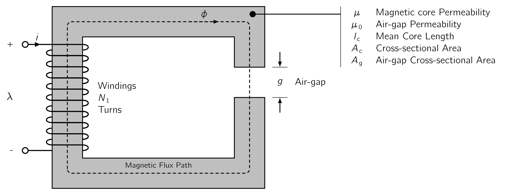
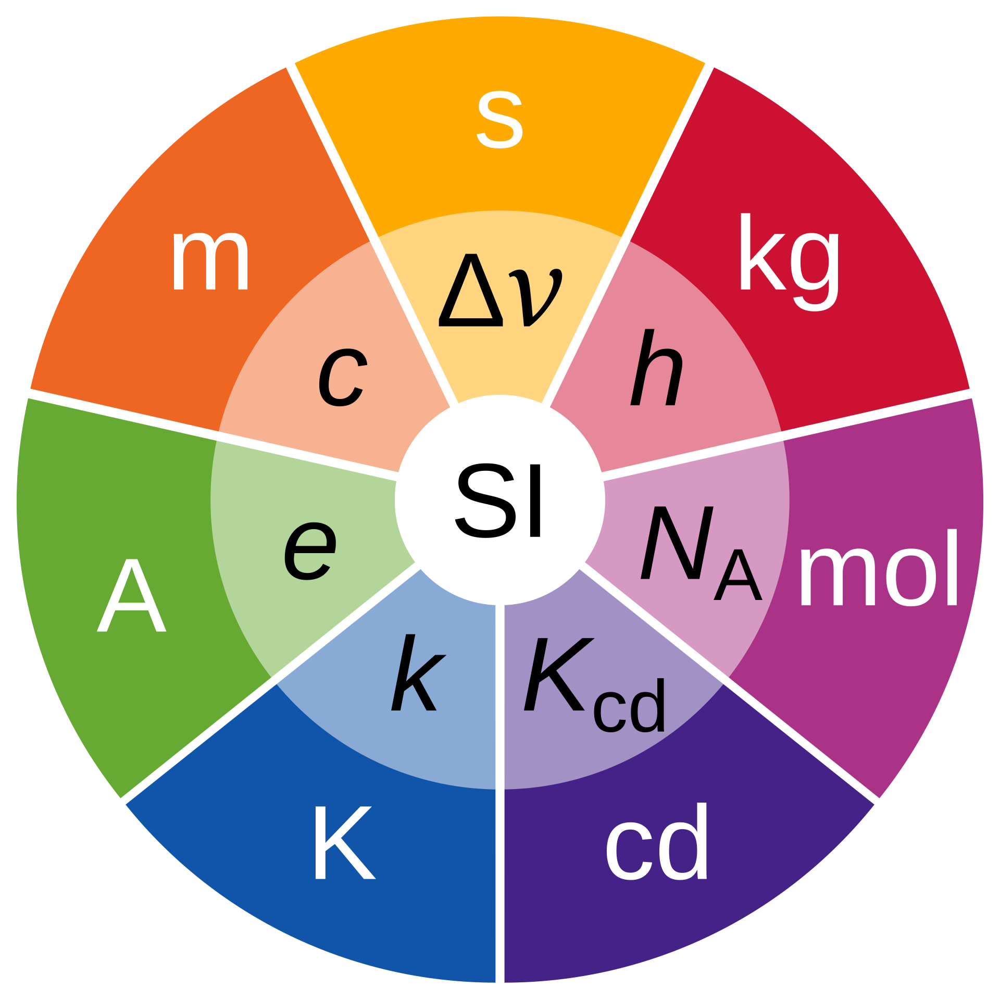
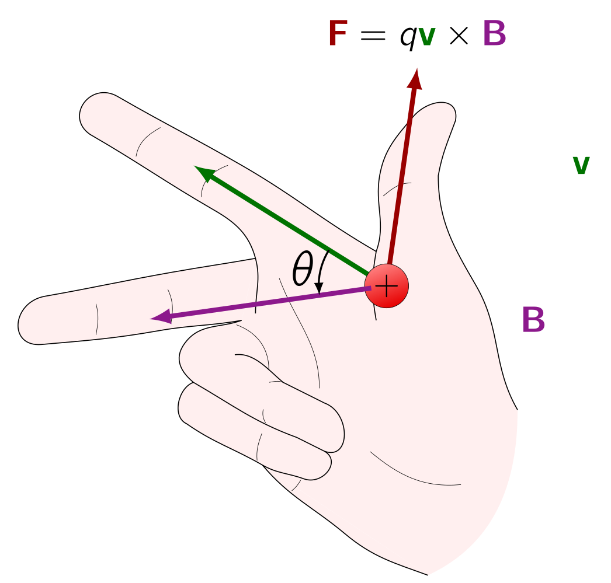
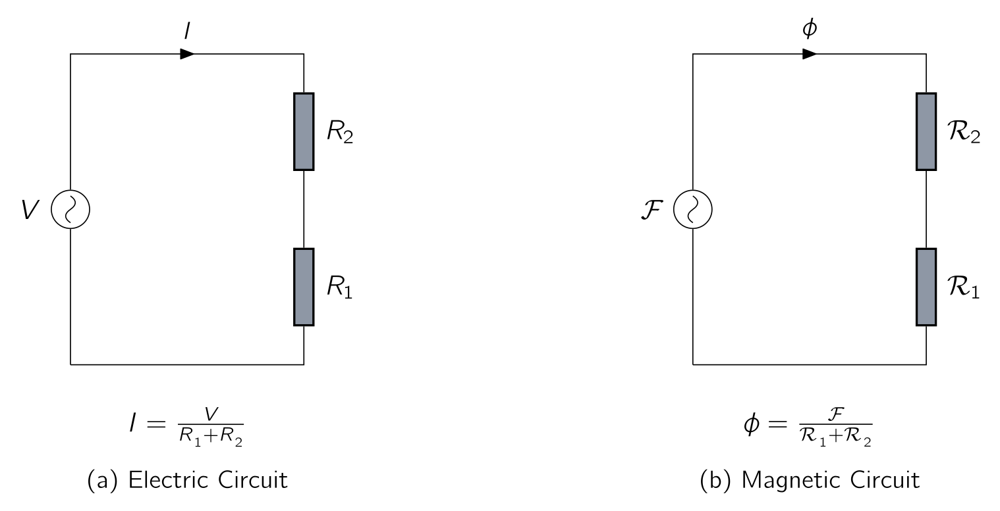

In this chapter we will develop the necessary tools for analysing of magnetic field systems and will provide a brief introduction to the properties of practical magnetic materials.
The complete, detailed solution for magnetic fields in most situations of practical engineering interest involves the solution of Maxwell’s equations [3] A topic which becomes the center-point in M.Sc Electrodynamics. along with various constitutive relationships which describe material properties. While, in practice, exact solutions are often unattainable, various simplifying assumptions allow us to have approximate solutions. [4] Although exact analytical solutions cannot be obtained, numerical solutions are quite common and have become indispensable tools for analysis and design. However, their use contributes little to a fundamental understanding of the principles and basic performance of electric machines and therefore should be used after learning the fundamentals.
We start our journey with the assumption that, for the systems treated in this lecture, the frequencies and sizes involved are such that the displacement-current () term in Maxwell’s equations can be neglected. This term accounts for magnetic fields being produced in space by time-varying electric fields and is associated with electromagnetic radiation. Neglecting this term results in the magneto-quasistatic form of the relevant Maxwell’s equations which relate magnetic fields to the currents which produce them [†]Griffiths, D. J. Introduction to electrodynamics (Cambridge University Press, 2023):
Let’s have a look at these two (2) equations and try to understand what they mean;
- 1.
- Eq. (1.1) states that the line integral of the tangential component of the magnetic field intensity () around a closed contour () is equal to the total current passing through any surface () linking that contour. From Eq. (1.1) we see that the source of is the current density .
- 2.
- Eq. (1.2) states that the magnetic flux density () is conserved. [5] i.e., that no net flux enters or leaves a closed surface.
From these equations we see that the magnetic field quantities can be determined solely from the instantaneous values of the source currents and time variations of the magnetic fields follow directly from time variations of the sources.
A second simplifying assumption involves the concept of the magnetic circuit. The general solution for the magnetic field intensity () and the magnetic flux density () in a structure of complex geometry is extremely difficult. However, a three-dimensional field problem can often be reduced to what is essentially a one dimensional circuit equivalent, giving solutions of within acceptable engineering accuracy [†]Fitzgerald, A. E., Kingsley, C. & Umans, S. D. Electric machinery (2003).
A magnetic circuit consists of a structure composed for the most part of high-permeability () magnetic material. The presence of high-permeability material tends to cause magnetic flux to be confined to the paths defined by the structure, similar to currents being confined to the conductors of an electric circuit.
A simple example of a magnetic circuit is shown in Fig. 1.2. The core is assumed to be composed of magnetic material whose permeability is much greater than that of the surrounding air (). The core is of uniform cross section and is excited by a winding of turns carrying a current of amperes. This winding produces a magnetic field in the core. Due to the high permeability of the magnetic core, an exact solution would show the magnetic flux is confined almost entirely to the core, the field lines follow the path defined by the core, and the flux density is essentially uniform over a cross section due to the cross-sectional area being uniform.
The magnetic field can be visualised in terms of flux lines which form closed loops interlinked with the winding.

As applied to the magnetic circuit of Fig. 1.2, the source of the magnetic field in the core is the ampere-turn product of . In magnetic circuit terminology is defined as the MMFMagneto-motive ForceThe magnetic pressure which drives magnetic flux in a magnetic circuit, and is the work done to move a unit magnetic pole. () acting on the magnetic circuit.
Although Fig. 1.2 shows only a single coil, transformers and most rotating machines have at least two (2) windings, and therefore needs to be replaced by the algebraic sum of the ampere-turns of all the windings.
The magnetic flux () crossing a surface () is the surface integral of the normal component of (). Therefore
| (1.3) |
In SI units, [6] 
This is equivalent to saying all flux entering the surface enclosing a volume must leave that volume over some other portion of that surface as magnetic flux lines form closed loops.
These facts can be used to justify the assumption that the magnetic flux density is uniform across the cross section of a magnetic circuit such as the core of Fig. 1.2. In this case Eq. (1.3) reduces to the simple scalar equation:
| (1.4) |
where, is the core flux (), is the core flux density (), and is the cross-sectional area (). Using Eq. (1.1) , the relationship between the MMFMagneto-motive ForceThe magnetic pressure which drives magnetic flux in a magnetic circuit, and is the work done to move a unit magnetic pole. acting on a magnetic circuit and the magnetic field intensity in that circuit is:
| (1.5) |
The core dimensions are such that the path length of any flux line is close to the mean core length . As a result, the line integral of Eq. (1.5) becomes simply the scalar product of the magnitude of and the mean flux path length . Therefore, the relationship between the MMFMagneto-motive ForceThe magnetic pressure which drives magnetic flux in a magnetic circuit, and is the work done to move a unit magnetic pole. and the magnetic field intensity can be written in magnetic circuit terminology as:
| (1.6) |
where is average magnitude of in the core.
The direction of
in the core can be found from the right-hand rule. [7] 
This can be stated in two (2) equivalent but slightly different ways:
-
Imagine a current-carrying conductor held in the right hand with the thumb pointing in the direction of current flow. Here, the fingers then point in the direction of the magnetic field created by that current.
-
Equivalently, if the coil in Fig. 1.2 is grasped in the right hand with the fingers pointing in the direction of the current, the thumb will point in the direction of the magnetic fields.
The relationship between the magnetic field intensity and the magnetic flux density is a property of the material in which the field exists. It is common to assume a linear relationship, which means:
| (1.7) |
where is known as the magnetic permeability.
In SI units, is measured in units of , is in , also known as teslas [8][8]Nikola Tesla (1856 - 1943) A Serbian-American engineer, futurist, and inventor. He is known for his contributions to the design of the modern alternating current (AC) electricity supply system. The SI unit is magnetic flux density is named after him. (), and is in , or equivalently (). In SI units, the permeability of free space is and is a physical constant.
The permeability of linear magnetic material can be expressed in terms of its relative permeability, its value relative to that of free space, or . Typical values of range from to for materials used in transformers and rotating machines.
For now we will assume is a known constant, although it actually varies appreciably with the magnitude of the magnetic flux density.
Transformers are wound on closed cores similar to one we have seen in Fig. 1.2. However, energy conversion devices which incorporate a moving element must have air gaps in their magnetic circuits which is also shown in Fig. 1.2. When the air-gap length () is much smaller than the dimensions of the adjacent core faces, the magnetic flux will follow the path defined by the core and the air gap and the techniques of magnetic-circuit analysis can be used.
If the air-gap length were to become excessively large, the flux will be observed to leak out of the sides of the air gap and the techniques of magnetic-circuit analysis will no longer be strictly applicable. Therefore, provided the air-gap length is sufficiently small, the configuration of Fig. 1.2 can be analysed as a magnetic circuit with two (2) series components both carrying the same flux :
-
a magnetic core of permeability , cross-sectional area and mean length , and
-
an air gap of permeability , cross-sectional area and length .
In the core, the magnetic field density is approximated to be:
| (1.8) |
and in the air gap, the value is:
| (1.9) |
If we apply Eq. (1.5) to aforementioned equations, this gives:
| (1.10) |
and using the linear - relationship [9] This is, again, just an assumption of simplification. of Eq. (1.7) gives
| (1.11) |
Here the is the MMFMagneto-motive ForceThe magnetic pressure which drives magnetic flux in a magnetic circuit, and is the work done to move a unit magnetic pole. applied to the magnetic circuit. From Eq. (1.10) we can see a portion of the MMFMagneto-motive ForceThe magnetic pressure which drives magnetic flux in a magnetic circuit, and is the work done to move a unit magnetic pole., namely , is required to produce magnetic field in the core whereas the remainder, produces magnetic field in the air gap.
For practical applications, and are related NOT only to constant permeability .
In fact, is often a non-linear, multi-valued function of . Therefore, although Eq. (1.10) continues to hold, it does not lead directly to a simple expression relating the MMFMagneto-motive ForceThe magnetic pressure which drives magnetic flux in a magnetic circuit, and is the work done to move a unit magnetic pole. and the flux densities, such as that of Eq. (1.11) .
Instead, the specifics of the nonlinear relation must be used, either graphically or analytically. However, in many cases, the concept of constant material permeability gives results of acceptable engineering accuracy and is frequently used.
Using both Eq. (1.8) and Eq. (1.9) , Eq. (1.11) can be rewritten in terms of the flux as:
| (1.12) |
The terms that multiply the flux in Eq. (1.12) , are known as the reluctance [10] A concept used in the analysis of magnetic circuits and defined as the ratio of MMFMagneto-motive ForceThe magnetic pressure which drives magnetic flux in a magnetic circuit, and is the work done to move a unit magnetic pole. to magnetic flux. It represents the opposition to magnetic flux, and depends on the geometry and composition of an object. It is analogous to electrical resistance in an electrical circuit in that resistance is a measure of the opposition to the electric current. The definition of magnetic reluctance is analogous to Ohm’s law in this respect. However, magnetic flux passing through a reluctance does NOT give rise to dissipation of heat as it does for current through a resistance. () of the core and air gap, respectively,
| (1.13) |
| (1.14) |
and therefore we arrive at:
| (1.15) |
Finally, Eq. (1.15) can be inverted to solve for the flux
In general, for any magnetic circuit of total reluctance (), the flux can be found as
| (1.18) |
The term which multiplies the MMFMagneto-motive ForceThe magnetic pressure which drives magnetic flux in a magnetic circuit, and is the work done to move a unit magnetic pole. is known as the permeance [11] The inverse of reluctance and is a measure of the quantity of magnetic flux for a number of current-turns. A magnetic circuit almost acts as though the flux is conducted, therefore permeance is larger for large cross-sections of a material and smaller for smaller cross section lengths. This concept is analogous to electrical conductance in the electric circuit. () and is the inverse of the reluctance. With that in mind, the total permeance of a magnetic circuit is:
| (1.19) |
This analogy is illustrated in Fig. 1.3. In the figure (a) shows an electric circuit in which a voltage drives a current through resistors and . (b) shows the schematic equivalent representation of the magnetic circuit of Fig. 1.2. Here we see that the MMFMagneto-motive ForceThe magnetic pressure which drives magnetic flux in a magnetic circuit, and is the work done to move a unit magnetic pole. , analogous to voltage in the electric circuit, drives a flux , analogous to the current in the electric circuit, through the combination of the reluctances of the core and the air gap . This analogy between the solution of electric and magnetic circuits can often be exploited to produce simple solutions for the fluxes in magnetic circuits of considerable complexity.

The fraction of the MMFMagneto-motive ForceThe magnetic pressure which drives magnetic flux in a magnetic circuit, and is the work done to move a unit magnetic pole. required to drive flux through each portion of the magnetic circuit, commonly referred to as the \gls {mmf} drop across that portion of the magnetic circuit, varies in proportion to its reluctance. [12] This is directly analogous to the voltage drop across a resistive element in an electric circuit.
Consider the magnetic circuit of Fig. 1.2. From Eq. (1.13) we see that high material permeability can result in low core reluctance, which can often be made much smaller than that of the air gap. In this case, the reluctance of the core can be neglected and the flux can be found from Eq. (1.16) in terms of and the air-gap properties alone:
| (1.20) |
While we treat permeability as constant here, it is worth remembering that practical magnetic materials have permeabilities which are not constant but vary with the flux level. However, from Eq. (1.13) to Eq. (1.16) we see that as long as this permeability remains sufficiently large, its variation will not significantly affect the performance of a magnetic circuit in which the dominant reluctance is that of an air gap.
In practical systems, the magnetic field lines “fringe” outward somewhat as they cross the air gap. Provided this fringing effect is NOT excessive, the magnetic-circuit concept remains applicable. The effect of these fringing fields is to increase the effective cross-sectional area of the air gap. Various empirical methods have been developed to account for this effect.
A correction for fringing fields in short air gaps can be made by adding the gap length to each of the two dimensions making up its cross-sectional area. For simplicity, we shall ignore fringing effects.
-
¶
- MMFMagneto-motive Force
The magnetic pressure which drives magnetic flux in a magnetic circuit, and is the work done to move a unit magnetic pole.